Clustering 3K PBMCs with Scanpy
 Bérénice Batut
Bérénice Batut Hans-Rudolf Hotz
Hans-Rudolf Hotz Mehmet Tekman
Mehmet TekmanOverview
question Questionsobjectives Objectives
What are the steps to prepare single-cell RNA-Seq data for clustering?
How to cluster cells in single-cell RNA-Seq data?
How cell type annotation can be assigned to cell clusters?
requirements Requirements
Describe an AnnData object to store single-cell data
Explain the preprocessing steps for single-cell data
Evaluate quality of single-cell data and apply steps to select and filter cells and genes based on QC
Execute data normalization and scaling
Identify highly variable genes
Construct and run a dimensionality reduction using Principal Component Analysis
Perform a graph-based clustering for cells
Identify marker genes for the clusters
Construct and run a cell type annotation for the clusters
- Introduction to Galaxy Analyses
- Sequence analysis
- Quality Control: slides slides - tutorial hands-on
- Mapping: slides slides - tutorial hands-on
- Transcriptomics
- Pre-processing of Single-Cell RNA Data: slides slides - tutorial hands-on
- Pre-processing of 10X Single-Cell RNA Datasets: tutorial hands-on
time Time estimation: 5 hours
Supporting Materials
last_modification Last modification: Jan 6, 2021
Introduction
comment Comment
This tutorial is significantly based on “Clustering 3K PBMCs” tutorial from Scanpy, “Seurat - Guided Clustering Tutorial” and “Orchestrating Single-Cell Analysis with Bioconductor” Amezquita et al. 2019
Single-cell RNA-seq analysis is a rapidly evolving field at the forefront of transcriptomic research, used in high-throughput developmental studies and rare transcript studies to examine cell heterogeneity within a populations of cells. The cellular resolution and genome wide scope make it possible to draw new conclusions that are not otherwise possible with bulk RNA-seq.
In this tutorial, we will investigate clustering of single-cell data from 10x Genomics, including preprocessing, clustering and the identification of cell types via known marker genes, using Scanpy (Wolf et al. 2018). It will be illustrated using a dataset of Peripheral Blood Mononuclear Cells (PBMC), containing 2,700 single cells.
Agenda
In this tutorial, we will cover:
Data
For this tutorial, we analyze a dataset of Peripheral Blood Mononuclear Cells (PBMC) extracted from a healthy donor, freely available from 10X Genomics. The dataset contains 2,700 single cells sequenced using Illumina NextSeq 500. The raw sequences have been processed by the cellranger pipeline from 10X to extract a unique molecular identifier (UMI) count matrix, in a similar way to that as explained in “Pre-processing of 10X Single-Cell RNA Datasets” tutorial.
In this matrix, the values represent the number for each feature (i.e. gene; row) that are detected in each cell (column). Such matrices can be quite large, where here there are 2,700 columns with 32,738 lines, with mostly zero values, i.e. an extremely sparse matrix. To optimize the storage of such a table and the information about the genes and cells, cellranger creates 3 files:
genes.tsv: a tabular file with information about the 32,738 genes in 2 columns (Ensembl gene id and the gene symbol)barcodes.tsv: a tabular file with the barcode for each of the 2,700 cells-
matrix.mtx: a condensed version of the count matrixThe count matrix is therefore represented by its non-zero values. Each non-zero value is indicated by its line number (1st column), its column number (2nd column) and its value (3rd column). The first row gives indication about the number of lines, column and non-zero values. More information on the Matrix Market Exchange (mtx) format can be found here
Data upload
hands_on Hands-on: Data upload
- Create a new history for this tutorial
Import the
genes.tsv,barcodes.tsvandmatrix.mtxfrom Zenodo or from the shared data libraryhttps://zenodo.org/record/3581213/files/genes.tsv https://zenodo.org/record/3581213/files/barcodes.tsv https://zenodo.org/record/3581213/files/matrix.mtxtip Tip: Importing data via links
- Copy the link location
Open the Galaxy Upload Manager (galaxy-upload on the top-right of the tool panel)
- Select Paste/Fetch Data
Paste the link into the text field
Press Start
- Close the window
By default, Galaxy uses the URL as the name, so rename the files with a more useful name.
tip Tip: Importing data from a data library
As an alternative to uploading the data from a URL or your computer, the files may also have been made available from a shared data library:
Go into Shared data (top panel) then Data libraries
Find the correct folder (ask your instructor)
- Select the desired files
- Click on the To History button near the top and select as Datasets from the dropdown menu
- In the pop-up window, select the history you want to import the files to (or create a new one)
- Click on Import
- Rename the datasets
- Inspect the
matrixfile
question Questions
32738 2700 2286884 32709 1 4 32707 1 1 32706 1 10 32704 1 1
- How many non-zero values are in the matrix?
- How many counts are found for the 32,706th gene in the 1st cell?
solution Solution
- There are 2,286,884 (2.6%) non-zero values for the 88,392,600 possible counts of the 32,738 genes (rows) and 2,700 cells (columns).
- 10 counts are found for the 32,706th row and 1st column.
The representation of the matrix with 3 files is convenient to share the data but not to process them. Single-cell analysis packages have attempted to solve the problem of storage and analysis by inventing their own standard, which has led to the proliferation of many different “standards” in the scRNA-seq package ecosystem.
AnnData
The most common format, called AnnData, stores the matrix as well as gene and cell annotations in a concise, compressed and extremely readable manner:

AnnData format stores a count matrix X together with annotations of observations (i.e. cells) obs, variables (i.e. genes) var and unstructured annotations uns.This format is used by Scanpy (Wolf et al. 2018), the tool suite for analyzing single-cell gene expression data that we will use in this tutorial. So we need first to import the matrix and annotations of genes and cells into an AnnData object.
hands_on Hands-on: Transform matrix and all into AnnData object
- Import AnnData and Loom tool with the following parameters:
- “hd5 format to be created”:
Anndata file- “Format for the annotated data matrix”:
Matrix Market (mtx), from Cell ranger or not
- param-file “Matrix”:
matrix.mtx- “Use 10x Genomics formatted mtx”:
Output from Cell Ranger v2 or earlier versions
- param-file “Genes”:
genes.tsv- param-file “Barcodes”:
barcodes.tsv- “Variables index”:
gene_symbols- “Make the variable index unique by appending ‘-1’, ‘-2’?”:
Yes- Rename the generated file to
Input 3k PBMC- Check that the format is
h5ad
Because the AnnData format is an extension of the HDF5 format, i.e. a binary format, an AnnData object can not be inspected directly in Galaxy by clicking on the galaxy-eye (View data) icon. Instead we need to use a dedicated tool from the AnnData suite.
hands_on Hands-on: Inspect an AnnData object
- Inspect AnnData tool with the following parameters:
- param-file “Annotated data matrix”:
Input 3k PBMC- “What to inspect?”:
General information about the objectInspect the generated file
question Questions
AnnData object with n_obs × n_vars = 2700 × 32738 var: 'gene_ids'
- How many observations are there? What do they represent?
- How many variables are there? What do they represent?
solution Solution
- There are 2,700 observations, representing the cells.
- There are 32,738 variables, representing the genes.
comment Comment: Faster Method for General Information
- The ScanPy toolset in Galaxy produces AnnData formats as output, where general information is provided for each dataset:
- Click on the name of the dataset in the history to expand it.
General Anndata information would be given in the expanded box:
e.g.
[n_obs x n_vars] - 2700 x 32738- For more specific queries, Inspect AnnData tool is required.
- Inspect AnnData tool with the following parameters:
- param-file “Annotated data matrix”:
Input 3k PBMC- “What to inspect?”:
The full data matrixInspect the generated file
question Questions
index MIR1302-10 FAM138A OR4F5 RP11-34P13.7 RP11-34P13.8 ... AAACATACAACCAC-1 0.0 0.0 0.0 0.0 AAACATTGAGCTAC-1 0.0 0.0 0.0 0.0 AAACATTGATCAGC-1 0.0 0.0 0.0 0.0 AAACCGTGCTTCCG-1 0.0 0.0 0.0 0.0 AAACCGTGTATGCG-1 0.0 0.0 0.0 0.0What is stored in the generated file?
solution Solution
The file is a table with 2,700 lines (observations or cells) and 32,738 columns (variables or genes): the count matrix for each of the 32,738 genes and 2,700 cells. The 1st row contains the gene symbol as annotation of the columns and the 1st column the barcodes of the cells as annotation of the rows.
- Inspect AnnData tool with the following parameters:
- param-file “Annotated data matrix”:
Input 3k PBMC- “What to inspect?”:
Key-indexed observations annotation (obs)Inspect the generated file
question Questions
index AAACATACAACCAC-1 AAACATTGAGCTAC-1 AAACATTGATCAGC-1 AAACCGTGCTTCCG-1 AAACCGTGTATGCG-1What is stored in the generated file?
solution Solution
The file is a tabular with annotations of the observations. i.e. the cells. Here there are only the barcodes as annotation, so only one column, being also the index for the count matrix.
- Inspect AnnData tool with the following parameters:
- param-file “Annotated data matrix”:
Input 3k PBMC- “What to inspect?”:
Key-indexed annotation of variables/features (var)Inspect the generated file
question Questions
index gene_ids MIR1302-10 ENSG00000243485 FAM138A ENSG00000237613 OR4F5 ENSG00000186092 RP11-34P13.7 ENSG00000238009 RP11-34P13.8 ENSG00000239945What is stored in the generated file?
solution Solution
The file is a tabular with annotations of the variables, i.e. the genes. Here the files has 2 columns: the gene symbols (also the index in the count matrix),
gene_idsor the Ensemble gene ids.
Preprocessing
The first step when we get our counts is to prepare them before we perform the clustering. This includes (Amezquita et al. 2019):
-
Selection and filtration of cells and genes based on quality metrics
Low-quality cells would interfere with downstream analyses. These cells may have been damaged during processing and may not have been fully captured by the sequencing protocol.
-
Data normalization and scaling
It will eliminate cell-specific biases (e.g., in capture efficiency), allowing us to perform explicit comparisons across cells afterwards. Some transformations, typically log, are also applied to adjust for the mean-variance relationship.
-
Selection of features
This selection picks a subset of interesting features for downstream analysis, by modelling the variance across cells for each gene and retaining genes that are highly variable. This step is done to reduce computational overhead and noise from uninteresting genes.
Quality control
Genes that appear in less than a few cells can be considered noise and thus removed.
hands_on Hands-on: Remove genes found in less than 3 cells
- Filter with scanpy tool with the following parameters:
- param-file “Annotated data matrix”:
Input 3k PBMC- “Method used for filtering”:
Filter genes based on number of cells or counts, using 'pp.filter_genes'
- “Filter”:
Minimum number of cells expressed
- “Minimum number of cells expressed required for a gene to pass filtering”:
3- Rename the generated file
3k PBMCInspect the dataset.
question Questions
[n_obs × n_vars] - 2700 × 13714 [var] - gene_ids - n_cellsHow many genes have been removed because they are expressed in less than 3 expressed cells?
solution Solution
There are now 13,714 cells. So 19,024 (32,738 - 13,714) genes have been removed.
Low-quality cells may be due to a variety of sources such as cell damage during dissociation or failure in library preparation (e.g., inefficient reverse transcription or PCR amplification, Ilicic et al. 2016). Usually these low-quality cells have low total counts, few expressed genes and high mitochondrial or spike-in proportions. Low-quality cells are problematic for downstream analyses and may contribute to misleading results.
details Impact of low-quality cells on the downstream analyses
Formation of their own distinct cluster(s)
Increased mitochondrial proportions or enrichment for nuclear RNAs after cell damage are the most obvious causes for this phenomenon. Low-quality cells in different cell types can, in the worst case, cluster together (because of similarities in the damage-induced expression profiles) leading to artificial intermediate states or trajectories between subpopulations that should be otherwise distinct. This phenomenon makes the results difficult to interpret.
Distortion of population heterogeneity during variance estimation or principal components analysis
With low-quality cells, the main differences captured by the first few principal components will be based on quality rather than biology, reducing then the effectiveness of dimensionality reduction. Similarly, differences between low- and high-quality cells will create genes with the largest variances. For example, in low-quality cells with very low counts, the scaling normalization increases the variance of genes that happen to have a non-zero count in those cells.
Misidentification of upregulated genes
Due to aggressive scaling to normalize for small cell sizes, low-quality cells shows genes that appear to be strongly “upregulated”. For example, contaminating transcripts may be present in all cells with a low but constant levels. With the increased scaling normalization in low-quality cells, the small counts for these transcripts may become large normalized expression values, i.e. an apparent upregulation compared to other cells.
To mitigate these problems, we need to remove these low-quality cells at the start of the analysis. Several common QC metrics can be used to identify these cells based on their expression profile:
-
Cell size, i.e. the total sum of counts across all genes for each cells
When cells are very degraded or absent from the library preparation, the number of reads sequenced from that library will be very low. Cells with small sizes are then considered to be of low quality: the RNA has been lost during the library preparation (cell lysis, inefficient cDNA capture and amplification, etc.)
-
Number of expressed genes, i.e. the number of genes with non-zero counts for each cells
A low number of expressed genes may be a result of poor-quality cells (e.g. dying, degraded, damaged, etc.), followed by high PCR amplification of the remaining RNA. The diverse transcript population has not been successfully captured so the cell is considered of low quality. Cell doublets or multiplets may also exhibit an aberrantly high gene count.
-
Proportion of reads mapped to genes in the mitochondrial genome
High concentrations of mitochondrial genes is often a result of damaged cells (Islam et al. 2014, Ilicic et al. 2016) where the endogenous RNA escapes or degrades. As mitochondria has its own cell membranes, it is often the last DNA/RNA in damaged cells to degrade and hence occurs in high quantities during sequencing.
We will make the key assumption that these metrics are independent of the biological state of each cell. Technical factors rather than biological processes are presumed to drive poor values (e.g., low cell sizes, high mitochondrial proportions). The subsequent removal of impacted cells do not misrepresent the biology in downstream analyses.
To identify low-quality cells, the simplest approach is to apply thresholds on the QC metrics. This strategy, while simple, is required to determine appropriate thresholds that will change given the experimental protocol and the biological system.
Computation of QC metrics
To estimate the thresholds, we first need to look at the distribution of QC metrics for our dataset.
The first 2 QC metrics (cell size and number of expressed genes) can be easily estimated from the count table. For the third metric (proportion of reads mapped to genes in the mitochondrial genome), we need the information about which genes are mitochondrial or not.
hands_on Hands-on: Extract gene annotation
- Inspect AnnData tool with the following parameters:
- param-file “Annotated data matrix”:
3k PBMC- “What to inspect?”:
Key-indexed annotation of variables/features (var)- Rename the generated file
Gene annotation
In the gene annotation, we currently have the gene symbol the Ensembl gene ids and the number of cells in which the genes are expressed, but have no information on whether a gene is mitochondrial. This can be extracted from the gene symbol as all mitochondrial genes have a name starting with MT- and added to the var of the AnnData object using Manipulate AnnData tool.
A new annotation for var should be a table with the same number of lines as var (i.e. one line per genes) and as many columns as new annotations, with their names on the 1st line. In our case, we would need to create a 1 column table with mito on the 1st line and then True for mitochondrial gene or False for non mitochondrial genes.
To create this table, we need to:
-
Create a file with gene symbols from
Gene annotationand a column with1for mitochondrial genes and0for other genesUsing the
awkprogram, we would like to print for every line the 1st column and a 2nd column with1if the 1st column starts withMT-or0if not, using the regular expression$1 ~ /^MT-/ -
Format it
- Replace the
0byFalseand1byTrue - Remove the first line
- Keep only the 2nd column
- Add
mitoon the 1st line
- Replace the
hands_on Hands-on: Add mitochondrial gene annotation
- Text reformatting tool with the following parameters:
- param-file “File to process”:
Gene annotation- “AWK Program”:
{print $1, $1 ~ /^MT-/}Inspect the generated file
question Questions
How many genes are found as mitochondrial?
solution Solution
To evaluate the number of non mitochondrial, we need to extract all lines for which the 2nd column is 1. This can be done using the Filter tool tool:
- param-file “Filter”: output of Text reformatting
- “With following condition”:
c2!=0- “Number of header lines to skip”:
1There are 13 genes found as mitochondrial (0.10% of the 13,714 genes).
- Replace Text in a specific column tool with the following parameters:
- param-file “File to process”: output of Text reformatting tool
- In “Replacement”:
- param-repeat “Insert Replacement”
- “in column”:
Column: 2- “Find pattern”:
0- “Replace with”:
False- param-repeat “Insert Replacement”
- “in column”:
Column: 2- “Find pattern”:
1- “Replace with”:
TrueNote: Ensure that you have selected the same column for both replacements.
- Select last tool with the following parameters:
- param-file “Text file”: output of Replace Text tool
- “Operation”:
Keep everything from this line on- “Number of lines”:
2- Cut tool with the following parameters:
- “Cut columns”:
c2- param-file “From”: output of Select last tool
Create a new tabular file from the following
mitotip Tip: Creating a new file
- Open the Galaxy Upload Manager
- Select Paste/Fetch Data
Paste the file contents into the text field
Change Type from “Auto-detect” to
tabular- Press Start and Close the window
- Concatenate datasets tool with the following parameters:
- param-file “Datasets to concatenate”:
Pasted entrydataset- In “Dataset”:
- param-repeat “Insert Dataset”
- param-file “Select”: output of Cut tool
Rename the generated file
Mitochondrial annotationand ensure that the datatype istabular- Manipulate AnnData tool with the following parameters:
- param-file “Annotated data matrix”:
3k PBMC- “Function to manipulate the object”:
Add new annotation(s) for observations or variables
- “What to annotate?”:
Variables (var)- param-file “Table with new annotations”:
Mitochondrial annotationRename the generated file
3k PBMC with mito annotation- Inspect AnnData tool with the following parameters:
- param-file “Annotated data matrix”:
3k PBMC with mito annotation- “What to inspect?”:
Key-indexed annotation of variables/features (var)- Inspect the generated file and check if the mitochondrial annotation has been added
We can now compute QC metrics on the AnnData object.
hands_on Hands-on: Compute QC metrics
- Inspect and manipulate with scanpy tool with the following parameters:
- param-file “Annotated data matrix”:
3k PBMC with mito annotation- “Method used for inspecting”:
Calculate quality control metrics, using 'pp.calculate_qc_metrics'
- “Name of kind of values in X”:
counts- “The kind of thing the variables are”:
genes- “Keys for boolean columns of
.varwhich identify variables you could want to control for”:mitoRename the generated file
3k PBMC with mito annotation and qc metricsInspect the dataset
question Questions
[n_obs × n_vars] - 2700 × 13714 [obs] - n_genes_by_counts - log1p_n_genes_by_counts - total_counts - log1p_total_counts - pct_counts_in_top_50_genes - pct_counts_in_top_100_genes - pct_counts_in_top_200_genes - pct_counts_in_top_500_genes - total_counts_mito - log1p_total_counts_mito - pct_counts_mito [var] - gene_ids - n_cells - mito - n_cells_by_counts - mean_counts - log1p_mean_counts - pct_dropout_by_counts - total_counts - log1p_total_countsWhich QC metrics have been computed?
solution Solution
The tool computed several QC metrics at both cell and gene levels. These metrics are added to the annotation tables.
At gene levels (stored in
var):
total_counts: sum of counts for a genemean_counts: mean expression for a gene over all cellsn_cells_by_counts: number of cells with non-zero counts for a genepct_dropout_by_counts: percentage of cells this gene does not appear inAt cell levels (stored in
obs):
total_counts: total number of counts for a celltotal_counts_mito: total number of counts for the mitochondrial genes in a celln_genes_by_counts: number of genes with non-zero countspct_counts_mito: proportion of total counts for a cell which are from mitochondrial genespct_counts_in_top_50_genes: cumulative percentage of counts for 50 most expressed genes in a cellpct_counts_in_top_100_genes: cumulative percentage of counts for 100 most expressed genes in a cellpct_counts_in_top_200_genes: cumulative percentage of counts for 200 most expressed genes in a cellpct_counts_in_top_500_genes: cumulative percentage of counts for 500 most expressed genes in a cell
We would like to visualize 3 of the more informative QC metrics:
- the cell size, i.e.
total_counts - the number of expressed genes, i.e.
n_genes_by_counts - the proportion of reads mapped to mitochondrial genes, i.e.
pct_counts_mito
hands_on Hands-on: Visualize QC metrics
- Plot with scanpy tool with the following parameters:
- param-file “Annotated data matrix”:
3k PBMC with mito annotation and qc metrics- “Method used for plotting”:
Generic: Violin plot, using 'pl.violin'
- “Keys for accessing variables”:
Subset of variables in 'adata.var_names' or fields of '.obs'
- “Keys for accessing variables”:
n_genes_by_counts, total_counts, pct_counts_mito- In “Violin plot attributes”:
- “Add a stripplot on top of the violin plot”:
Yes
- “Add a jitter to the stripplot”:
Yes
- “Size of the jitter points”:
0.4- “Display keys in multiple panels”:
YesInspect the generated file
question Questions
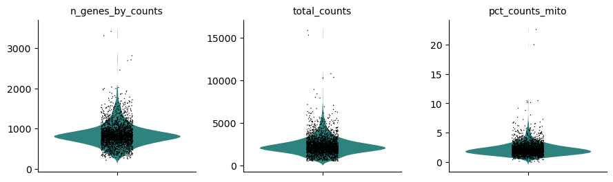
How do the distributions of the 3 QC metrics look?
solution Solution
For the cell size, i.e.
total_counts, most of the values are between 1,000 reads and 4,000 reads, with some extremely high values skewing the distribution.The numbers of expressed genes, i.e.
n_genes_by_counts, are mostly between 500 genes and 1,200 genes, with also some extremely high values skewing the distribution.The distribution of the proportions of reads mapped to mitochondrial genes, i.e.
pct_counts_mito, is even more narrow with some cells having no counts from mitochondrial genes but also having some really extreme values (above 5%).- Plot with scanpy tool with the following parameters:
- param-file “Annotated data matrix”:
3k PBMC with mito annotation and qc metrics- “Method used for plotting”:
Generic: Scatter plot along observations or variables axes, using 'pl.scatter'
- “Plotting tool that computed coordinates”:
Using coordinates
- “x coordinate”:
total_counts- “y coordinate”:
n_genes_by_counts- “Use the layers attribute?”:
NoInspect the generated file
question Questions
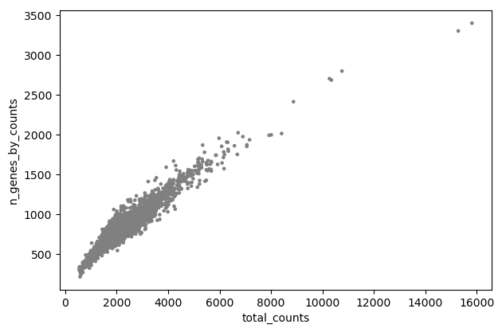
Is there any relationship between the cell size and the number of expressed genes?
solution Solution
On the plot, we can see a strong correlation between the total number of counts for a cell and the number of genes with positive counts.
- Plot with scanpy tool with the following parameters:
- param-file “Annotated data matrix”:
3k PBMC with mito annotation and qc metrics- “Method used for plotting”:
Generic: Scatter plot along observations or variables axes, using 'pl.scatter'
- “Plotting tool that computed coordinates”:
Using coordinates
- “x coordinate”:
n_genes_by_counts- “y coordinate”:
pct_counts_mito- “Use the layers attribute?”:
NoInspect the generated file
question Questions
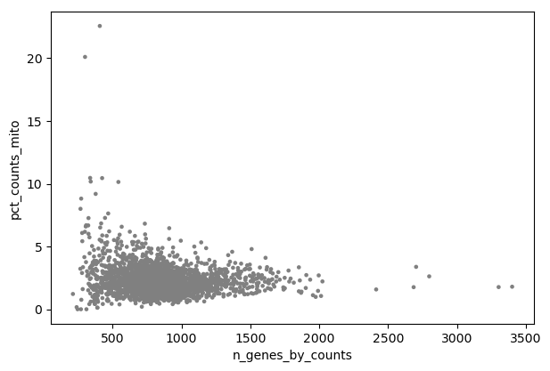
- Is there any relationship between the number of expressed genes and the proportion of reads mapped to mitochondrial genes?
- What could be a good threshold to filter for cells with high concentrations of mitochondrial genes?
- What could be good thresholds to filter for cells based on the number of expressed genes?
solution Solution
- Cells with a high proportion of mitochondrial genes are not also cells that have many expressed genes. There is no visible correlation.
- The cells with a percentage of mitochondrial counts above 5% have also few genes. So 5% may be a good threshold.
- As discussed before, a low number of expressed genes may be a sign of poor-quality cells. Any cells with less than 200 genes is definitely out of the main distribution so this could be a good threshold to use. High gene count may also be a sign for cell multiplets. We will choose here a threshold of 2,500 genes.
Filtering of low-quality cells
As explained before, we would like now to filter for low-quality cells based on the 3 previous metrics (cell size, number of expressed genes, and proportion of reads mapped to mitochondrial genes). As the cell size is highly correlated with the number expressed genes, we can focus only on the number expressed genes and the proportion of reads mapped to mitochondrial genes.
Based on the previous plot, we would like to remove cells that have:
- a number of expressed genes below 200 or above 2,500
- a percentage of reads mapped to mitochondrial genes above 5%
hands_on Hands-on: Remove low-quality cells
- Filter with scanpy tool with the following parameters:
- param-file “Annotated data matrix”:
3k PBMC with mito annotation and qc metrics- “Method used for filtering”:
Filter cell outliers based on counts and numbers of genes expressed, using 'pp.filter_cells'
- “Filter”:
Minimum number of genes expressed
- “Minimum number of genes expressed required for a cell to pass filtering”:
200Inspect the dataset
question Questions
[n_obs × n_vars] - 2700 × 13714How many cells have been removed because they have less than 200 expressed genes?
solution Solution
There are still 2,700 cells. So no cells have been removed because they have less than 200 expressed genes.
- Filter with scanpy tool with the following parameters:
- param-file “Annotated data matrix”: output of Filter tool
- “Method used for filtering”:
Filter cell outliers based on counts and numbers of genes expressed, using 'pp.filter_cells'
- “Filter”:
Maximum number of genes expressed
- “Maximum number of genes expressed required for a cell to pass filtering”:
2500- Inspect the dataset
question Questions
[n_obs × n_vars] - 2695 × 13714How many cells have been removed because they have more than 2,500 expressed genes?
solution Solution
There are now 2,695 cells. So 5 cells have been removed because they have more than 2,500 expressed genes.
- Manipulate AnnData tool with the following parameters:
- param-file “Annotated data matrix”: output of Filter tool
- “Function to manipulate the object”:
Filter observations or variables
- “What to filter?”:
Observations (obs)- “Type of filtering?”:
By key (column) values
- “Key to filter”:
pct_counts_mito- “Type of value to filter”:
Number
- “Filter”:
less than- “Value”:
5.0Rename the generated file
3k PBMC after QC filtering- Inspect AnnData tool with the following parameters:
- param-file “Annotated data matrix”:
3k PBMC after QC filtering- “What to inspect?”:
General information about the objectquestion Questions
AnnData object with n_obs × n_vars = 2638 × 13714How many cells have been removed because they have more than 5% of reads mapped to mitochondrial genes?
solution Solution
There are now 2,638 cells. So 57 cells have been removed because they have more than 5% of reads mapped to mitochondrial genes.
Normalization and scaling
In scRNA-seq, we can observe systematic differences in sequencing coverage between cells (Stegle et al. 2015), because of technical differences in cDNA capture or PCR amplification efficiency across cells, attributable to the difficulty of achieving consistent library preparation with minimal starting material. After removing low-quality cells, normalization of the counts removes these differences to avoid that they interfere with comparisons of the expression profiles between cells. Any observed heterogeneity or differential expression within the cell population after normalization are then driven by biology and not technical biases.
Scaling normalization is the simplest and most commonly-used class of normalization strategies. All counts for each cell are divided by a cell-specific scaling factor, often called a “size factor”. The assumption behind this process is that any technical biases tend to affect genes in a similar manner. The relative bias for each cell is represented by the size factor for that cell. Dividing the cell counts by its size factor should then remove the bias.
The simplest strategy for scaling normalization is the cell size normalization, i.e. similar total sum of counts across all genes for each cell. The “cell size factor” for each cell is computed directly for its cell size and transformed such that the mean size factor across all cells is equal to 1. The normalized expression values are then kept on the same scale as the original counts.
Here we would to normalize our count table such that each cell have 10,000 reads.
hands_on Hands-on: Normalize for cell size
- Normalize with scanpy tool with the following parameters:
- param-file “Annotated data matrix”:
3k PBMC after QC filtering- “Method used for normalization”:
Normalize counts per cell, using 'pp.normalize_total'
- “Target sum”:
10000.0- “Exclude (very) highly expressed genes for the computation of the normalization factor (size factor) for each cell”:
No- “Name of the field in ‘adata.obs’ where the normalization factor is stored”:
norm- “List of layers to normalize”:
all- “How to normalize layers?”:
After: for each layer in layers each cell has a total count equal to target_sum.
The normalized counts should be log-transformed afterwards to adjust for the mean-variance relationship.
With log-transformation, the differences in the log-values represent log-fold changes in expression. Log-transformation focuses on promoting contributions from genes with strong relative differences (e.g. a gene that is expressed at an average count of 50 in cell type A and 10 in cell type B rather than a gene that is expressed at an average count of 1100 in A and 1000 in B).
hands_on Hands-on: Log-transform the counts
- Inspect and manipulate tool with the following parameters:
- param-file “Annotated data matrix”: output of Normalize tool
- “Method used for inspecting”:
Logarithmize the data matrix, using 'pp.log1p'
We will freeze the current state of the AnnData object, i.e. the logarithmized raw gene expression, in the a raw attribute. This information will be used later in differential testing and visualizations of gene expression.
hands_on Hands-on: Freeze the state of the AnnData object
- Manipulate AnnData tool with the following parameters:
- param-file “Annotated data matrix”: output of Inspect and manipulate tool
- “Function to manipulate the object”:
Freeze the current state into the 'raw' attribute- Rename the generated output
3k PBMC after QC filtering and normalization
Selection of features
Data from scRNA-Seq is often used in exploratory analyses to characterize heterogeneity across cells. With clustering and dimensionality reduction, cells are compared based on their gene expression profiles. The choice of genes to use may have a major impact on the behaviour of the clustering and the dimensionality reduction. We need then to remove genes with random noise while keeping genes containing useful information about the biology of the system. This reduces the data size but still highlights any interesting biological signal without the noise that obscures that structure.
Selecting the most variable genes based on their expression across the cells (i.e. genes highly expressed in some cells, and lowly expressed in others) is the simplest approach for feature selection. With this approach, we assume that increased variation in some genes compared to other genes are genuine biological differences and not technical noise or a baseline level of “uninteresting” biological variation.
To quantify the per-gene variation, the simplest approach consists of computing the variance of the log-normalized expression values for each gene across all cells in the population. With this approach, the feature selection is based on the same log-values as the ones used in clustering, ensuring then that the quantitative definition of heterogeneity is consistent throughout the entire analysis.
Calculation of the per-gene variance is simple but feature selection requires modelling of the mean-variance relationship, as done in the Seurat procedure (Stuart et al. 2019) we will use.
Once the per-gene variation has been quantified, we need to select the subset of highly variable genes that we will use in downstream analyses. A large subset reduces the risk of discarding any interesting biological signal, but increases the noise from irrelevant genes on the signal. The optimal trade-off is difficult to determine but there are several common strategies routinely used. You can read the Chapter 8 from “Orchestrating Single-Cell Analysis with Bioconductor” for a nice presentation of the different strategies. Here, we will define the set of highly variable genes as those which, after normalization, have a normalized dispersion amount higher than 0.5.
hands_on Hands-on: Identify the highly variable genes
- Filter with scanpy tool with the following parameters:
- param-file “Annotated data matrix”:
3k PBMC after QC filtering and normalization- “Method used for filtering”:
Annotate (and filter) highly variable genes, using 'pp.highly_variable_genes'
- “Flavor for computing normalized dispersion”:
seurat
- “Minimal mean cutoff”:
0.0125- “Maximal mean cutoff”:
3- “Minimal normalized dispersion cutoff”:
0.5- “Inplace subset to highly-variable genes?”:
No- Plot with scanpy tool with the following parameters:
- param-file “Annotated data matrix”: output of the last Filter tool
- “Method used for plotting”:
Preprocessing: Plot dispersions versus means for genes, using 'pl.highly_variable_genes'
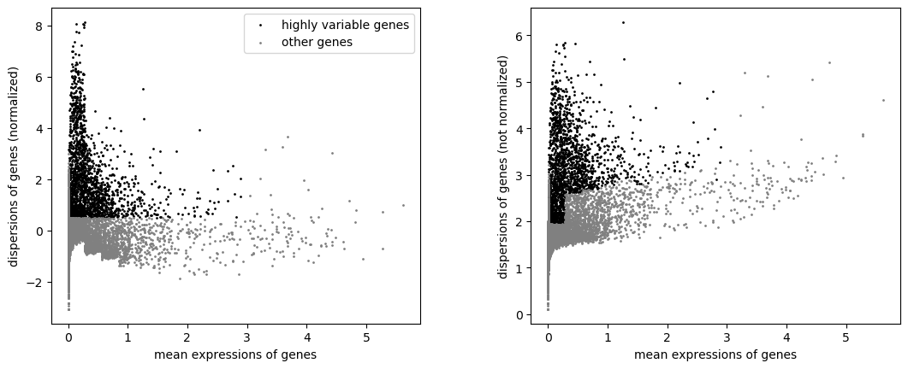
Both highly variable genes and other genes are still in the AnnData object. We can now actually keep only the highly variable genes.
hands_on Hands-on: Keep the highly variable genes
Inspect the output of the last Filter tool
question Questions
[n_obs × n_vars] - 2638 × 13714 [obs] - n_genes_by_counts - log1p_n_genes_by_counts - total_counts - log1p_total_counts - pct_counts_in_top_50_genes - pct_counts_in_top_100_genes - pct_counts_in_top_200_genes - pct_counts_in_top_500_genes - total_counts_mito - log1p_total_counts_mito - pct_counts_mito - n_genes - norm [var] - gene_ids - n_genes - mito - n_cells_by_counts - mean_counts - log1p_mean_counts - pct_dropout_by_counts - total_counts - log1p_total_counts - highly_variable - means - dispersions - dispersions_norm
- How many genes are in the
AnnDataobject?- Where is the stored the information about the genes and if they are highly variable or not?
solution Solution
- There are now 13,714 genes, as before.
- Extra annotations have been added to
var, whose a boolean annotationhighly_variablefor highly variable genes.- Manipulate AnnData tool with the following parameters:
- param-file “Annotated data matrix”: output of the last Filter tool
- “Function to manipulate the object”:
Filter observations or variables
- “What to filter?”:
Variables (var)
- “Type of filtering?”:
By key (column) values
- “Key to filter”:
highly_variable- “Type of value to filter”:
Boolean- “Value to keep”:
YesRename the generated output
3k PBMC with only HVG- Inspect AnnData tool with the following parameters:
- param-file “Annotated data matrix”:
3k PBMC with only HVG- “What to inspect?”:
General information about the objectquestion Questions
AnnData object with n_obs × n_vars = 2638 × 1838How many genes have been removed?
solution Solution
Only 1,838 (over the 13,714) genes are kept.
Scaling the data
Prior to any downstream analysis like dimensional reduction, we need to apply a linear transformation or scaling to:
- Regress out unwanted sources of variation in the total counts per cell and the percentage of mitochondrial genes expressed.
- Scale data to unit variance and zero mean, i.e. the variance across cells is 1 and the mean expression is 0, in order to give equal weight in downstream analyses and ensure that highly-expressed genes do not dominate.
hands_on Hands-on: Scale the data
- Remove confounders with scanpy tool with the following parameters:
- param-file “Annotated data matrix”:
3k PBMC with only HVG- “Method used for plotting”:
Regress out unwanted sources of variation, using 'pp.regress_out'
- “Keys for observation annotation on which to regress on”:
total_counts, pct_counts_mito- Inspect and manipulate with scanpy tool with the following parameters:
- param-file “Annotated data matrix”: output of Remove confounders tool
- “Method used for inspecting”:
Scale data to unit variance and zero mean, using 'pp.scale'
- “Zero center?”:
Yes“Maximum value”:
10.0It clips values exceeding a standard deviation of 10.
- Rename the generated output
3k PBMC with only HVG, after scaling
Dimensionality reduction
We aim in scRNA-seq to compare cells based on their expressions across genes, e.g. to identify similar transcriptomic profiles. Each gene represents then a dimension of the data.
With a dataset of 2 genes, we could make a 2-dimensional plot where each point is a cell and each axis is the expression of one gene. For datasets with thousands of genes, the concept is the same: each cell’s expression profile defines its location in the high-dimensional expression space.
Expressions of different genes are correlated if they are affected by the same biological process. The separate information for these individual genes do not need to be stored, but can instead be compressed into a single dimension, e.g. an “eigengene”. Dimensionality reduction aims then to reduce the number of separate dimensions in the data and then:
- reduces the computational work in downstream analyses to only a few dimensions
- reduces noise by averaging across multiple genes to obtain a more precise representation of the patterns in the data
- enables effective plotting of the data.
Principal Component Analysis
Principal Component Analysis (PCA) is a dimensionality reduction technique consisting in the identification of axes in high-dimensional space that capture the largest amount of variation. This simple, highly effective strategy is widely used in data science.
In PCA, the first axis (or Principal Component (PC)) is chosen such that it captures the greatest variance across cells. The next PC should be orthogonal to the first and capture the greatest remaining amount of variation, and so on.
By applying PCA to scRNA-Seq, we assume that multiple genes are affected by the same biological processes in a coordinated way and random technical or biological noise affects each gene independently. As more variation can be captured by considering the correlated behaviour of many genes, the top PCs are likely to represent the biological signal and the noise are concentrated into the later PCs. The dominant factors of heterogeneity are then captured by the top PCs. Restricting downstream analyses to the top PCs will then reduce the dimensionality of the data whilst focusing on the biological signal and removing the noise.
Here we perform the PCA on the log-normalized expression values and compute the first 50 PCs.
hands_on Hands-on: Perform the PCA
- Cluster, infer trajectories and embed with scanpy tool with the following parameters:
- param-file “Annotated data matrix”:
3k PBMC with only HVG, after scaling- “Method used for plotting”:
Computes PCA (principal component analysis) coordinates, loadings and variance decomposition, using 'tl.pca'
- “Number of principal components to compute”:
50- “Type of PCA?”:
Full PCA
- “Compute standard PCA from covariance matrix?”:
Yes- “SVD solver to use”:
ARPACK wrapper in SciPy- Rename the generated output
3k PBMC with only HVG, after scaling and PCA
details Storage of PCA information in
AnnDataobjectsPCA information are stored in the
AnnDataobject in a quite complex way.hands_on Hands-on: Inspect the PCA inside an
AnnDataobject
Inspect the
3k PBMC with only HVG, after scaling and PCAdatasetquestion Questions
[n_obs × n_vars] - 2638 × 1838 [obs] - n_genes_by_counts - log1p_n_genes_by_counts - total_counts - log1p_total_counts - pct_counts_in_top_50_genes - pct_counts_in_top_100_genes - pct_counts_in_top_200_genes - pct_counts_in_top_500_genes - total_counts_mito - log1p_total_counts_mito - pct_counts_mito - n_genes - norm [var] - gene_ids - mito - n_cells_by_counts - mean_counts - log1p_mean_counts - pct_dropout_by_counts - total_counts - log1p_total_counts - highly_variable - means - dispersions - dispersions_norm [uns] - pca [obsm] - X_pca [varm] - PCsHow is the PCA stored in the
AnnDataobject?solution Solution
3 new objects (
uns,obsm,varm) have been added to theAnnDataobject with information that seem related to PCA.
unsis an unstructured annotation,obsmmulti-dimensional annotation of the observations (i.e. genes) andvarmmulti-dimensional annotation of the variables (i.e. cells).- Inspect AnnData tool with the following parameters:
- param-file “Annotated data matrix”:
3k PBMC with only HVG, after scaling and PCA- “What to inspect?”:
Unstructured annotation (uns)
- “What to inspect in uns?”:
PCAquestion Questions
What information is stored in
unsregarding the PCA?solution Solution
unsis storing:
- the ratio of explained variance by the PCs, sorted by PC, as a one-column table
- the explained variance for each PCs, equivalent to the eigenvalues of the covariance matrix, as a one-column table
- Inspect AnnData tool with the following parameters:
- param-file “Annotated data matrix”:
3k PBMC with only HVG, after scaling and PCA- “What to inspect?”:
Multi-dimensional observations annotation (obsm)
- “Which annotation to inspect for the observations?”:
PCA coordinates (X_pca)question Questions
What are the information stored in
obsmregarding the PCA?solution Solution
obsmis storing the PCA coordinates for the cells as a table with the rows being the cells, the columns the PCs and the values the PCs coordinate for cell and PC.- Inspect AnnData tool with the following parameters:
- param-file “Annotated data matrix”:
3k PBMC with only HVG, after scaling and PCA- “What to inspect?”:
Multi-dimensional variables annotation (varm)
- “Which annotation to inspect for the variables?”:
Principal components containing the loadingsquestion Questions
What information is stored in
varmregarding the PCA?solution Solution
varmis storing the PCA coordinates for the genes as a table with the rows being the genes, the columns the PCs and the values the PCs coordinate for gene and PC.
Visualization of PCA
One application of dimensionality reduction and PCA is to compress the data for plotting into 2 (sometimes 3) dimensions with the most salient features of the data.
Scanpy provides several useful ways of visualizing both cells and genes that define the PCA. The simplest approach for visualization is to plot the top 3 PCs on 2D plots (PC1 vs PC2 and PC2 vs PC3)
hands_on Hands-on: Plot the top 2 PCs the PCA
- Plot with scanpy tool with the following parameters:
- param-file “Annotated data matrix”:
3k PBMC with only HVG, after scaling and PCA- “Method used for plotting”:
PCA: Plot PCA results, using 'pl.pca_overview'
- In “Plot attributes”
- In “Component”
- Click on param-repeat “Insert Component”
- In “1: Component”
- “X-axis”:
1- “Y-axis”:
2- Click on param-repeat “Insert Component”
- In “1: Component”
- “X-axis”:
2- “Y-axis”:
3- “Number of panels per row”:
2
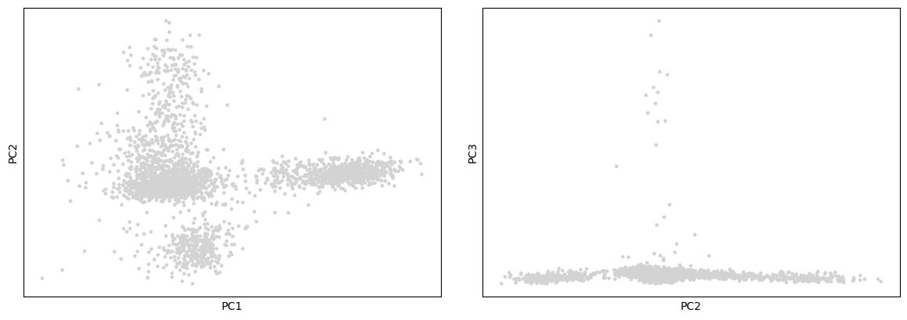
On these plots we see the different cells projected onto the first 3 PCs. We can already see subpopulations of cells, but only 3 PCs are represented there and plot like these are not so informative. It may be more interesting to project also the values for the genes, since perhaps these are the genes most involved in the 3 PCs.
hands_on Hands-on: Visualize the top genes associated with PCs
- Plot with scanpy tool with the following parameters:
- param-file “Annotated data matrix”:
3k PBMC with only HVG, after scaling and PCA- “Method used for plotting”:
PCA: Rank genes according to contributions to PCs, using 'pl.pca_loadings'
- “List of comma-separated components”:
1,2,3question Questions
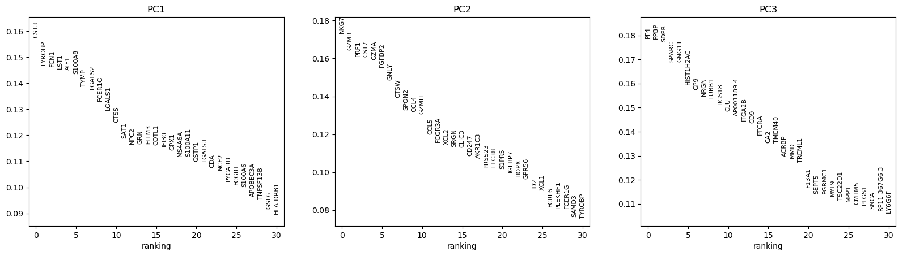
What are the top genes for each of the 3 first PCs? What do they represent?
solution Solution
CST3 is the gene the most associated with the 1st PC, NKG7 the one for the 2nd PC, and PF4 and PPBP for the 3rd PC (for consistency with the published scanpy and Seurat documentation, we will use PPBP).
- Plot with scanpy tool with the following parameters:
- param-file “Annotated data matrix”:
3k PBMC with only HVG, after scaling and PCA- “Method used for plotting”:
PCA: Plot PCA results, using 'pl.pca_overview'
- “Keys for annotations of observations/cells or variables/genes”:
CST3, NKG7, PPBP- In “Plot attributes”
- In “Component”
- Click on param-repeat “Insert Component”
- In “1: Component”
- “X-axis”:
1- “Y-axis”:
2- Click on param-repeat “Insert Component”
- In “1: Component”
- “X-axis”:
2- “Y-axis”:
3- “Number of panels per row”:
2
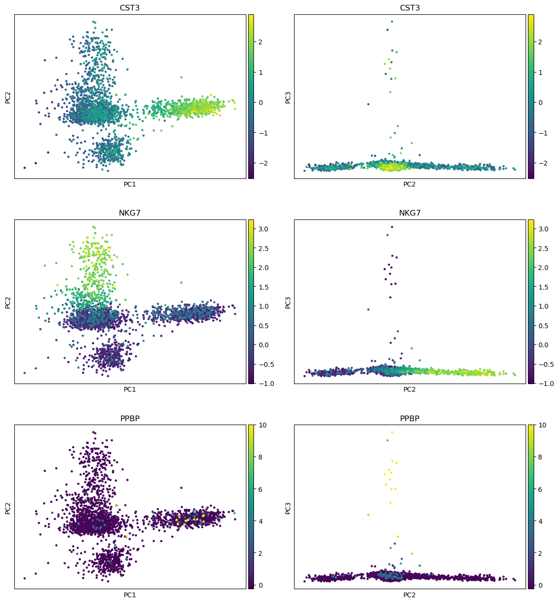
question Questions
Where are the differences in expression for CST3, NKG7, and PPBP?
solution Solution
- For CST3, the differences are mostly projected on PC1 (expected as CST3 is the top gene for PC1), and not visible on the PC3 vs PC2 plot.
- For NKG7, the differences in expression are seen on PC2.
- For PPBP, the differences in expression are seen on PC3.
Determination of the number of PCs to keep
We performed the PCA analyses using 50 PCS. They represent a robust compression of the dataset, but we may not need to keep all of them. How many components should we choose to include?
The choice of the number of PCs is a similar question to the choice of the number of highly variable genes to keep. More PCs means more noise but also more biological signal.
A simple heuristic for choosing the number of PCs generates an “Elbow plot”: a ranking of the PCs based on the percentage of variance they explain.
hands_on Hands-on: Generate an Elbow plot
- Plot with scanpy tool with the following parameters:
- param-file “Annotated data matrix”:
3k PBMC with only HVG, after scaling and PCA- “Method used for plotting”:
PCA: Scatter plot in PCA coordinates, using 'pl.pca_variance_ratio'
- “Use the log of the values?”:
Yes
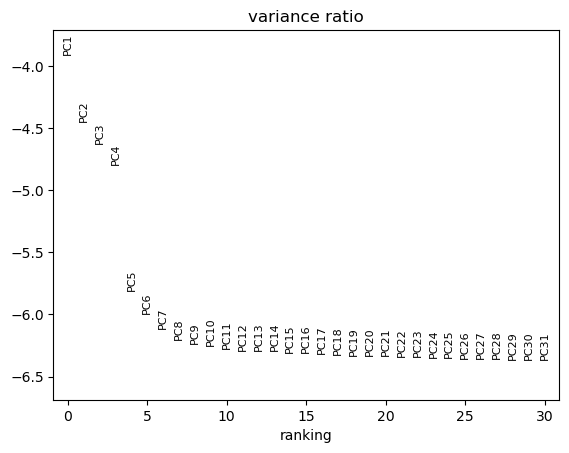
To determine the elbow point, we assume that each of the PCs should explain much more variance than the remaining PCS. So after the last PCs we choose, the percentage of variance explained should not drop much.
question Questions
How many PCs should we keep given the previous plot?
solution Solution
We choose here to keep 10 PCs.
We encourage users to repeat downstream analyses with different number of PCs.
Clustering of the cells
In the PC projection, we saw some subpopulations of cells emerging. We would like now to empirically define these subpopulation of cells with similar expression profiles using unsupervised clustering.
Clustering summarizes the data and allows us to describe the population heterogeneity in terms of discrete and easily understandable labels. The subpopulations can be afterwards treated as proxies for biological objects like cell types or states.
Graph-based clustering has been popularized for clustering large scRNA-Seq datasets by its use in Seurat (Butler et al. 2018, Stuart et al. 2019). Such approaches like the K-nearest neighbor (KNN) graph works in 2 steps:
-
Computation of a neighborhood graph
A graph is first built with each node being a cell connected to its nearest neighbours having similar expression patterns. Edges are weighted based on the similarity between the cells: higher weight is given to cells that are more closely related, i.e. have similar expression profiles.
-
Clustering of the neighborhood graph
The graph is then partitioned into highly interconnected “quasi-cliques” or “communities”, i.e. cells that are more connected to cells in the same community than they are to cells of different communities. Each community represents a cluster that we can use for downstream interpretation.
Computation of a neighborhood graph
When running graph-based clustering, we need to think about:
- How many neighbors are considered when constructing the graph.
- What scheme is used to weight the edges.
Here, to reproduce original results, we choose 10 neighbors for a KNN graph, the Euclidian distance metrics and the UMAP method (McInnes et al. 2018) to compute the connectivities. The values will change depending on the data and can not easily predefined: testing different values is the only solution.
hands_on Hands-on: Compute the neighborhood graph
- Inspect and manipulate with scanpy tool with the following parameters:
- param-file “Annotated data matrix”:
3k PBMC with only HVG, after scaling and PCA- “Method used for inspecting”:
Compute a neighborhood graph of observations, using 'pp.neighbors'
- “The size of local neighborhood (in terms of number of neighboring data points) used for manifold approximation”:
10- “Number of PCs to use”:
10- “Use a hard threshold to restrict the number of neighbors to n_neighbors?”:
Yes- “Method for computing connectivities”:
umap (McInnes et al, 2018)- “Distance metric”:
euclideanRename the generated output
3k PBMC with only HVG, after scaling, PCA and KNN graphInspect the dataset
question Questions
How is the neighborhood graph stored in the
AnnDataobject?solution Solution
An extra object
neighborshas been added tounswith 2 mtx objects (similar format to the original count table):
- Distance between each cells
- Weighted adjacency matrix between cells
This information can be accessed using Inspect AnnData tool with the following parameters:
- param-file “Annotated data matrix”:
3k PBMC with only HVG, after scaling, PCA and KNN graph- “What to inspect?”:
Unstructured annotation (uns)
- “What to inspect in uns?”:
Neighbors
Visualization of the neighborhood graph
To visualize and explore the neighborhood graph, we can apply an extra step of non-linear dimensional reduction techniques to learn the underlying manifold of the data in order to place similar cells together in low-dimensional space. Cells that will be in the same clusters, i.e. cells with similar local neighborhoods in high-dimensional space, should co-localize on these low-dimensional plots.
Two techniques are commonly used for the non-linear dimensional reduction: t-SNE (t-distributed stochastic neighbor embedding) and UMAP. Scanpy authors recommend to use here UMAP as it better preserves trajectories (check Becht et al. 2019 for a review) and easily accommodates new data.
Here, we will reduce the neighborhood to 2 UMAP components and then we will check to see how the cells are projected on them given the top genes
hands_on Hands-on: Embed and plot the neighborhood graph
- Cluster, infer trajectories and embed with scanpy tool with the following parameters:
- param-file “Annotated data matrix”:
3k PBMC with only HVG, after scaling, PCA and KNN graph- “Method used for plotting”:
Embed the neighborhood graph using UMAP, using 'tl.umap'Rename the generated output
3k PBMC with only HVG, after scaling, PCA, KNN graph, UMAPquestion Questions
How is the UMAP reduction stored in the
AnnDataobject?solution Solution
An extra object
X_umaphas been added toobsmwith the 2 UMAP coordinates for each cell, as a table of 2 columns and 2,638 lines.This information can be accessed using:
- Inspect AnnData tool with the following parameters:
- param-file “Annotated data matrix”:
3k PBMC with only HVG, after scaling, PCA, KNN graph, UMAP- “What to inspect?”:
Generalinformation about the object- Inspect AnnData tool with the following parameters:
- param-file “Annotated data matrix”:
3k PBMC with only HVG, after scaling, PCA and KNN graph, UMAP- “What to inspect?”:
Multi-dimensional observations annotation (obsm)- “What to inspect in for the observations?”:
UMAP coordinates (X_umap)- Plot with scanpy tool with the following parameters:
- param-file “Annotated data matrix”:
3k PBMC with only HVG, after scaling, PCA, KNN graph, UMAP- “Method used for plotting”:
Embeddings: Scatter plot in UMAP basis, using 'pl.umap'
- “Keys for annotations of observations/cells or variables/genes”:
CST3, NKG7, PPBP
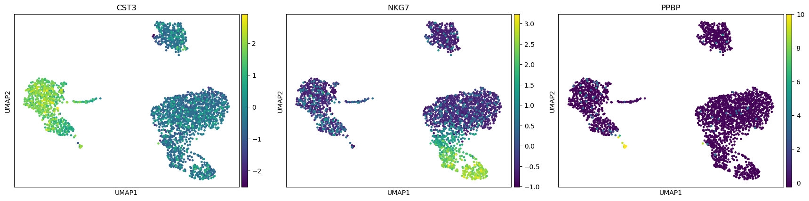
question Questions
Are clusters identifiable on these graphs? Might they be linked to PCs?
solution Solution
There seem to be at least 3 big clusters (the 3 blobs) before looking at the expression of some representative genes.
With the plot colored with NKG7 expression, we clearly see that the blob on the bottom right could be divided in 3 sub-clusters (light green, blue, purple). Given the expression of PPBP, the “arm” on the blob on the left should be a different cluster.
Clustering of the neighborhood graph
Given the first visualization, we can now cluster the cells within a neighborhood graph.
Which community detection algorithm should we use to define the clusters? Several modularity optimization techniques such as the SLM (Blondel et al. 2008), Louvain algorithm (Levine et al. 2015) or the Leiden algorithm (Traag et al. 2019) are available to iteratively group cells together while optimizing the standard modularity function.
Currently, the Louvain graph-clustering method (community detection based on optimizing modularity) is the one recommended. We need to define a value for the resolution parameter, i.e. the ‘granularity’ of the downstream clustering. High values lead to a greater number of clusters. For single-cell datasets of around 3K cells, we recommend to use a value between 0.4 and 1.2. For larger datasets, the optimal resolution will be higher.
hands_on Hands-on: Cluster the neighborhood graph
- Cluster, infer trajectories and embed with scanpy tool with the following parameters:
- param-file “Annotated data matrix”:
3k PBMC with only HVG, after scaling, PCA, KNN graph, UMAP- “Method used for plotting”:
Cluster cells into subgroups, using 'tl.louvain'
- “Flavor for the clustering”:
vtraag (much more powerful)
- “Resolution”:
0.5Rename the generated output
3k PBMC with only HVG, after scaling, PCA, KNN graph, UMAP, clusteringquestion Questions
How is the clustering information stored in the
AnnDataobject?solution Solution
An extra column
louvainhas been added to theobsobject with the cluster id for each cell.This information can be accessed using:
- Inspect AnnData tool with the following parameters:
- param-file “Annotated data matrix”:
3k PBMC with only HVG, after scaling, PCA, KNN graph, UMAP, clustering- “What to inspect?”:
Generalinformation about the object- Inspect AnnData tool with the following parameters:
- param-file “Annotated data matrix”:
3k PBMC with only HVG, after scaling, PCA, KNN graph, UMAP, clustering- “What to inspect?”:
Key-indexed observations annotation (obs)
The cells in the same clusters should be co-localized in the UMAP coordinate plots.
hands_on Hands-on: Plot the neighborhood graph and the clusters
- Plot with scanpy tool with the following parameters:
- param-file “Annotated data matrix”:
3k PBMC with only HVG, after scaling, PCA, KNN graph, UMAP, clustering- “Method used for plotting”:
Embeddings: Scatter plot in UMAP basis, using 'pl.umap'
- “Keys for annotations of observations/cells or variables/genes”:
louvain, CST3, NKG7, PPBP- In “Plot attributes”
- “Number of panels per row”:
2
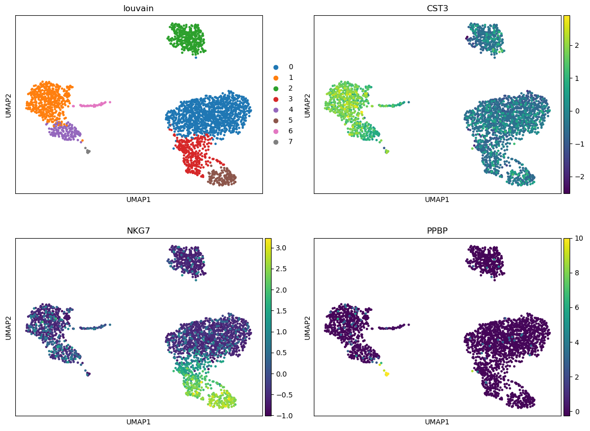
question Questions
- How many clusters have been identified? Do they fit with the ones quickly identified with UMAP plots?
- In which clusters do you expected to have CST3, NKG7 and PPBP as representative?
solution Solution
- 8 clusters are identified, more or less corresponding to the ones we could see on the UMAP plots.
- We expect that:
- CST3 should be representative of clusters 1, 3, 4, 6
- NKG7 for clusters 0, 3 and 5
- PPBP for cluster 7
Finding marker genes
To give sense to the clusters, we need to identify the genes that drive separation between clusters. These marker genes can then be used to assign biological sense (e.g. cell type) to each cluster based on their functional annotation, but also to identify subtle differences between clusters (e.g., changes in activation or differentiation state) based on the behaviour of genes in the affected pathways.
Marker genes are usually detected by their differential expression between clusters, as the more strongly DE genes are more likely to have caused separate clustering of cells. To quantify the differences in expression profiles, several different statistical tests can be used.
The identification of the marker genes for each cluster is made not only on the highly variable genes, but on the whole set (currently stored in the raw attribute).
Using the t-test
The simplest and fastest method is the Welch t-test. It has good statistical properties for large numbers of cells (Soneson and Robinson 2018).
hands_on Hands-on: Rank the highly differential genes using t-test
- Inspect and manipulate with scanpy tool with the following parameters:
- param-file “Annotated data matrix”:
3k PBMC with only HVG, after scaling, PCA, KNN graph, UMAP, clustering- “Method used for inspecting”:
Rank genes for characterizing groups, using 'tl.rank_genes_groups'
- “The key of the observations grouping to consider”:
louvain- “Use ‘raw’ attribute of input if present”:
Yes- “Comparison”:
Compare each group to the union of the rest of the group- “The number of genes that appear in the returned tables”:
100- “Method”:
t-test
- “P-value correction method”:
Benjamini-HochbergRename the generated output
3k PBMC with only HVG, after scaling, PCA, KNN graph, UMAP, clustering, marker genes with t-testquestion Questions
How is the marker gene information stored in the
AnnDataobject?solution Solution
An extra object
rank_genes_groupshas been added to theunsobject with 5 tables for the 100 top ranked genes (rows) for each cluster (column):
- Names of the rank genes
- Z-scores for the rank genes
- Log2 Fold changes
- P-values
- Adjusted p-values
This information can be accessed using:
- Inspect AnnData tool with the following parameters:
- param-file “Annotated data matrix”:
3k PBMC with only HVG, after scaling, PCA, KNN graph, UMAP, clustering, marker genes with t-test- “What to inspect?”:
Generalinformation about the object- Inspect AnnData tool with the following parameters:
- param-file “Annotated data matrix”:
3k PBMC with only HVG, after scaling, PCA, KNN graph, UMAP, clustering, marker genes with t-test- “What to inspect?”:
Unstructured annotation (uns)
- “What to inspect in uns?”:
Rank gene groups (rank_genes_groups)- Plot with scanpy tool with the following parameters:
- param-file “Annotated data matrix”:
3k PBMC with only HVG, after scaling, PCA, KNN graph, UMAP, clustering, marker genes with t-test- “Method used for plotting”:
Marker genes: Plot ranking of genes using dotplot plot, using 'pl.rank_genes_groups'
- “Number of genes to show”:
20- “Number of panels per row”:
3- “Should the y-axis of each panels be shared?”:
No- Inspect AnnData tool with the following parameters:
- param-file “Annotated data matrix”:
3k PBMC with only HVG, after scaling, PCA, KNN graph, UMAP, clustering, marker genes with t-test- “What to inspect?”:
Unstructured annotation (uns)
- “What to inspect in uns?”:
Rank gene groups (rank_genes_groups)- Inspect the
Names for rank genesfile
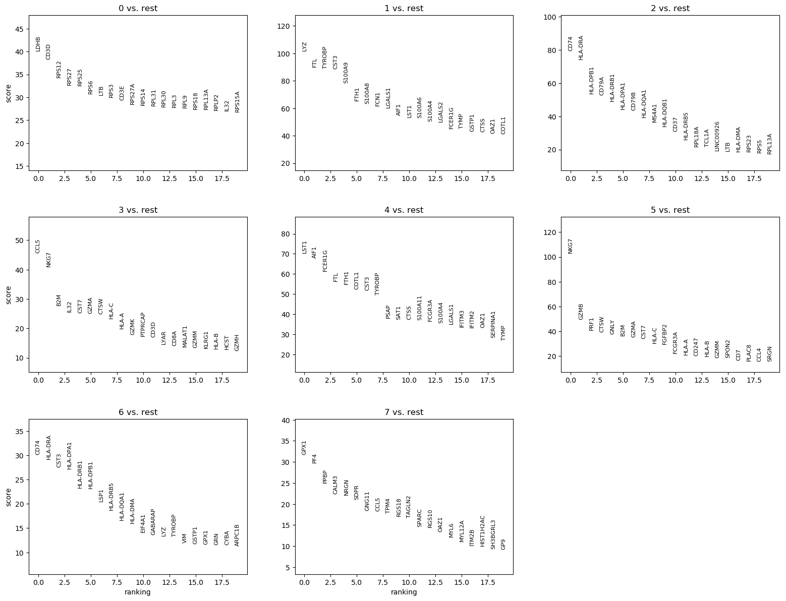
We can quickly look at the 5 top ranked genes per cluster:
| 0 | 1 | 2 | 3 | 4 | 5 | 6 | 7 |
|---|---|---|---|---|---|---|---|
| LDHB | LYZ | CD74 | CCL5 | LST1 | NKG7 | CD74 | GPX1 |
| CD3D | FTL | HLA-DRA | NKG7 | AIF1 | GZMB | HLA-DRA | PF4 |
| RPS12 | TYROBP | HLA-DPB1 | B2M | FCER1G | PRF1 | CST3 | PPBP |
| RPS27 | CST3 | CD79A | IL32 | FTL | CTSW | HLA-DPA1 | CALM3 |
| RPS25 | S100A9 | HLA-DRB1 | CST7 | FTH1 | GNLY | HLA-DRB1 | NRGN |
question Questions
Are CST3, NKG7 and PPBP in the set of marker genes? If yes, are they assigned to the clusters we guessed before?
solution Solution
- CST3 is a marker gene for clusters 1, 4, 6 (not 3 as guessed previously)
- NKG7 for clusters 3 and 5 (not 0 as guessed previously)
- PPBP for cluster 7, as guessed previously
Using Wilcoxon rank sum test
Another widely used method for pairwise comparisons between groups of observations is the Wilcoxon rank sum test (also known as the Wilcoxon-Mann-Whitney test). This test directly assesses separation between the expression distributions of different clusters. It is the recommended approach to use in publication (Soneson and Robinson 2018).
hands_on Hands-on: Rank the highly differential genes using Wilcoxon rank sum
- Inspect and manipulate with scanpy tool with the following parameters:
param-file “Annotated data matrix”:
3k PBMC with only HVG, after scaling, PCA, KNN graph, UMAP, clusteringNote: Please pay attention to the dataset name.
“Method used for inspecting”:
Rank genes for characterizing groups, using 'tl.rank_genes_groups'
- “The key of the observations grouping to consider”:
louvain- “Use ‘raw’ attribute of input if present”:
Yes- “Comparison”:
Compare each group to the union of the rest of the group- “The number of genes that appear in the returned tables”:
100- “Method”:
Wilcoxon-Rank-Sum
- “P-value correction method”:
Benjamini-HochbergRename the generated output
3k PBMC with only HVG, after scaling, PCA, KNN graph, UMAP, clustering, marker genes with Wilcoxon test- Plot with scanpy tool with the following parameters:
- param-file “Annotated data matrix”:
3k PBMC with only HVG, after scaling, PCA, KNN graph, UMAP, clustering, marker genes with Wilcoxon test- “Method used for plotting”:
Marker genes: Plot ranking of genes using dotplot plot, using 'pl.rank_genes_groups'
- “Number of genes to show”:
20- “Number of panels per row”:
3- “Should the y-axis of each panels be shared?”:
No- Inspect AnnData tool with the following parameters:
- param-file “Annotated data matrix”:
3k PBMC with only HVG, after scaling, PCA, KNN graph, UMAP, clustering, marker genes with Wilcoxon test- “What to inspect?”:
Unstructured annotation (uns)
- “What to inspect in uns?”:
Rank gene groups (rank_genes_groups)- Rename the
Names for rank genesfile toRanked genes with Wilcoxon test- Inspect
Ranked genes with Wilcoxon testfile
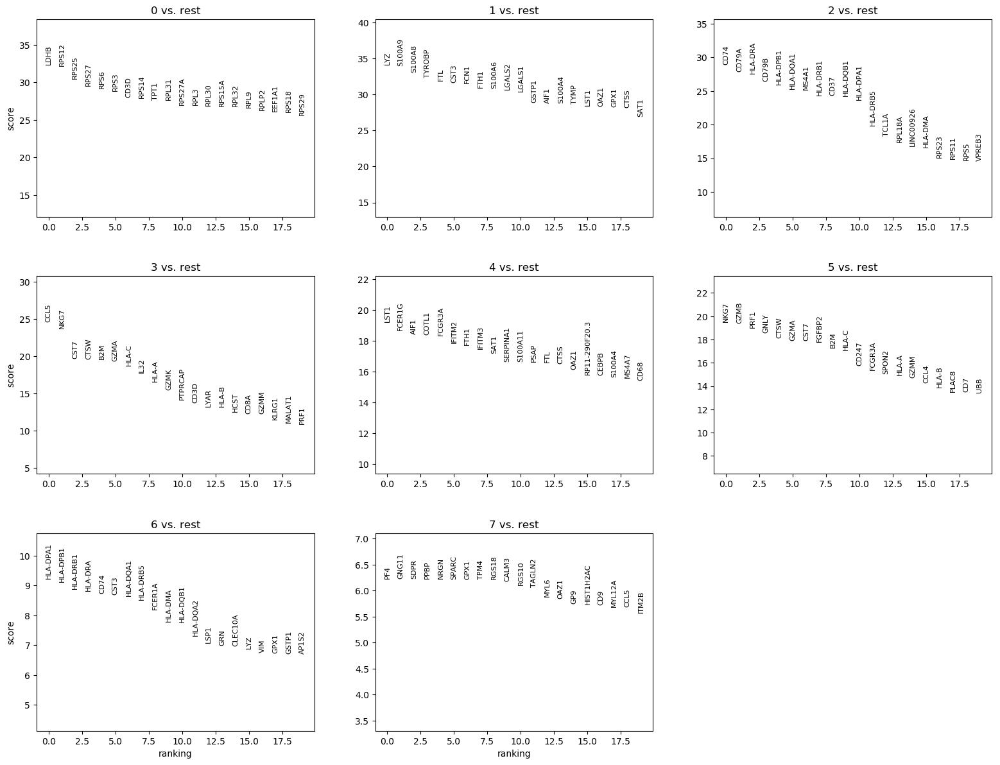
We can quickly look at the 5 top ranked genes per cluster:
| 0 | 1 | 2 | 3 | 4 | 5 | 6 | 7 |
|---|---|---|---|---|---|---|---|
| LDHB | LYZ | CD74 | CCL5 | LST1 | NKG7 | HLA-DPA1 | PF4 |
| RPS12 | S100A9 | CD79A | NKG7 | FCER1G | GZMB | HLA-DPB1 | GNG11 |
| RPS25 | S100A8 | HLA-DRA | CST7 | AIF1 | PRF1 | HLA-DRB1 | SDPR |
| RPS27 | TYROBP | CD79B | CTSW | COTL1 | GNLY | HLA-DRA | PPBP |
| RPS6 | FTL | HLA-DPB1 | B2M | FCGR3A | CTSW | CD74 | NRGN |
| RPS3 | CST3 | HLA-DQA1 | GZMA | IFITM2 | GZMA | CST3 | SPARC |
| CD3D | FCN1 | MS4A1 | HLA-C | FTH1 | CST7 | HLA-DQA1 | GPX1 |
question Questions
- Are the 5 top ranked genes different than the one for the t-test?
- Are CST3, NKG7 and PPBP in the marker genes? If yes, are they assigned to the clusters we guessed before?
solution Solution
- The 5 top ranked genes are slightly different, at least in their order.
- We see that:
- CST3 is a ranked genes for clusters 1, 4, 6 (not 3 as guessed previously)
- NKG7 for clusters 3 and 5 (not 0 as guessed previously)
- PPBP for cluster 7, as we guessed previously.
hands_on Hands-on: Compare differential expression for CST3, NKG7 and PPBP in the different clusters
- Plot with scanpy tool with the following parameters:
- param-file “Annotated data matrix”:
3k PBMC with only HVG, after scaling, PCA, KNN graph, UMAP, clustering, marker genes with Wilcoxon test- “Method used for plotting”:
Generic: Violin plot, using 'pl.violin'
- “Keys for accessing variables”:
Subset of variables in 'adata.var_names' or fields in '.obs'
- “Keys for accessing variables”:
CST3, NKG7, PPBP- “The key of the observation grouping to consider”:
louvain
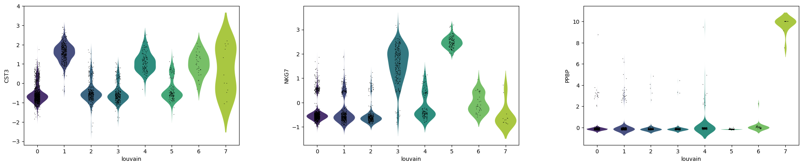
question Questions
Are CST3, NKG7 and PPBP more expressed in the clusters for which they are marker genes?
solution Solution
- CST3 is more expressed in clusters 1, 4, 6, the ones for which it was previously found as a marker gene, but also in cluster 7, which is unexpected.
- NKG7 is more expressed in clusters 3 and 5, the ones for which it was previously found as a marker gene.
- PPBP is very pronounced in cluster 7, for which it was previously found as a marker gene.
Visualization of expression of the marker genes
The marker genes should be more expressed in the clusters for which they are markers. We would like to confirm this idea using some visualization.
Expression of the top marker genes in each cluster
The assumption should be even more true for the top marker genes. The first way to visualize the expression of the top marker genes is to look at the distribution of the expression of each marker gene in cells for each cluster.
hands_on Hands-on: Plot expression probability distributions across clusters of top marker genes
- Plot with scanpy tool with the following parameters:
- param-file “Annotated data matrix”:
3k PBMC with only HVG, after scaling, PCA, KNN graph, UMAP, clustering, marker genes with Wilcoxon test- “Method used for plotting”:
Generic: Stacked violin plot, using 'pl.stacked_violin'
- “Variables to plot (columns of the heatmaps)”:
Subset of variables in 'adata.var_names'
- “List of variables to plot”:
LDHB, LYZ, CD74, CCL5, LST1, NKG7, HLA-DPA1, PF4- “The key of the observation grouping to consider”:
louvain- “Number of categories”:
8- “Use ‘raw’ attribute of input if present”:
Yes- “Custom figure size:
Yes- “Swap axes?”:
Yes- In “Violin plot attributes”:
- “Add a stripplot on top of the violin plot”:
No
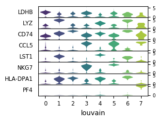
question Questions
Are the top marker genes only expressed in the cluster for which they are markers?
solution Solution
LDHB, LYZ and CD74, even if they are top markers genes for the cluster 0, 1, 2 respectively, are also expressed in all other clusters (and also found in the top 100 marker genes for other clusters), but with higher level in the cluster for they are markers.
CCL5, LST1, NKG7 and HLA-DPA1 are not expressed in all clusters but also not only in the one they are markers.
PF4 is only expressed in cluster 7.
Another approach consists of displaying the mean expression of the marker genes for the cells on the neighborhood graph.
hands_on Hands-on: Plot top marker gene expression on an UMAP plot
- Plot with scanpy tool with the following parameters:
- param-file “Annotated data matrix”:
3k PBMC with only HVG, after scaling, PCA, KNN graph, UMAP, clustering, marker genes with Wilcoxon test- “Method used for plotting”:
Embeddings: Scatter plot in UMAP basis, using 'pl.umap'
- “Keys for annotations of observations/cells or variables/genes”:
louvain, LDHB, LYZ, CD74, CCL5, LST1, NKG7, HLA-DPA1, PF4- “Use ‘raw’ attribute of input if present”:
Yes- In “Plot attributes”
- “Number of panels per row”:
2

question Questions
Are the top marker genes clearly associated to their clusters?
solution Solution
For most genes, we can clearly see for which cluster they are marker genes. But for physically close clusters, the differences are not so obvious.
Expression of the top 20 markers genes in cells for each cluster
We would like now to have a look at the expression of the top 20 marker genes in the different cells for each cluster
hands_on Hands-on: Plot heatmap of the gene expression in cells
- Plot with scanpy tool with the following parameters:
- param-file “Annotated data matrix”:
3k PBMC with only HVG, after scaling, PCA, KNN graph, UMAP, clustering, marker genes with Wilcoxon test- “Method used for plotting”:
Marker genes: Plot ranking of genes as heatmap plot, using 'pl.rank_genes_groups_heatmap'
- “Number of genes to show”:
20- “Use ‘raw’ attribute of input if present”:
Yes- “Compute and plot a dendrogram?”:
Yes
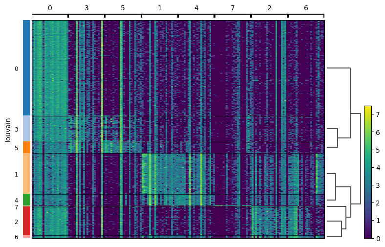
Each cells is shown in a row and in columns are the marker genes for each cluster.
question Questions
How are clusters close to each other in terms of expression of the top 20 marker genes?
solution Solution
Clusters 0, 3, and 5 are similar in term of expression. This was expected as they are physically close on the neighborhood graph.
Clusters 1 and 4 are together and then 2 and 6 are together after 7. These observations are less expected given the neighborhood graph: 1 and 4 are physically close, but 2 is far from 7 and 6.
Comparison of the marker genes between clusters
Previously we identified marker genes by taking gene expression in cells for each cluster individually and comparing them to all remaining cells.
In some cases, it may also be interesting to find marker genes distinguishing one given cluster from one or several clusters. For example, the marker genes distinguishing cluster 0 from cluster 1.
hands_on Hands-on: Identify the marker genes distinguishing cluster 0 from cluster 1 using Wilcoxon rank sum
- Inspect and manipulate with scanpy tool with the following parameters:
- param-file “Annotated data matrix”:
3k PBMC with only HVG, after scaling, PCA, KNN graph, UMAP, clustering, marker genes with Wilcoxon test- “Method used for inspecting”:
Rank genes for characterizing groups, using 'tl.rank_genes_groups'
- “The key of the observations grouping to consider”:
louvain- “Use ‘raw’ attribute of input if present”:
Yes- “Subset of groups to which comparison shall be restricted”:
0- “Comparison”:
Compare with respect to a specific group
- “Group identifier with respect to which compare”:
1- “The number of genes that appear in the returned tables”:
100- “Method”:
Wilcoxon-Rank-Sum
- “P-value correction method”:
Benjamini-HochbergRename the generated output
3k PBMC with only HVG, after scaling, PCA, KNN graph, UMAP, clustering, marker genes for 0 vs 1 with Wilcoxon test- Plot with scanpy tool with the following parameters:
- param-file “Annotated data matrix”:
3k PBMC with only HVG, after scaling, PCA, KNN graph, UMAP, clustering, marker genes for 0 vs 1 with Wilcoxon test- “Method used for plotting”:
Marker genes: Plot ranking of genes using dotplot plot, using 'pl.rank_genes_groups'
- “Number of genes to show”:
20- “Should the y-axis of each panels be shared?”:
No
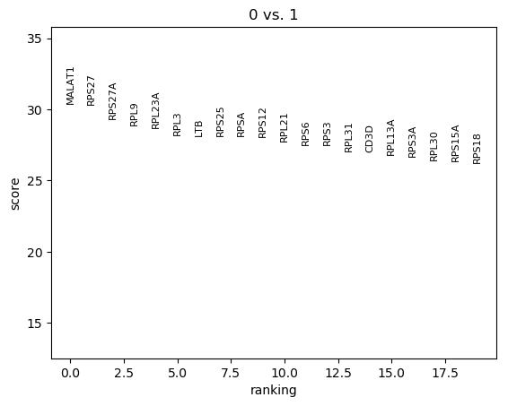
question Questions
How can we interpret this plot?
solution Solution
In this graph are the marker genes distinguishing cluster 0 from cluster 1, ranked based on their difference of expression of the genes between cells in both clusters. So MALAT1 is the most differentially expressed gene between cells in cluster 0 and cells in cluster 1, even though it was not in the set of top marker genes for cluster 0.
The marker genes distinguishing cluster 0 from cluster 1 are extracted based on their differences in expression, which can be easily visualized.
hands_on Hands-on: Plot expression difference for the marker genes distinguishing cluster 0 from cluster 1
- Plot with scanpy tool with the following parameters:
- param-file “Annotated data matrix”:
3k PBMC with only HVG, after scaling, PCA, KNN graph, UMAP, clustering, marker genes for 0 vs 1 with Wilcoxon test- “Method used for plotting”:
Marker genes: Plot ranking of genes as violin plot, using 'pl.rank_genes_groups_violin'
- “Which genes to plot?”:
A number of genes
- “Number of genes to show”:
10- “Use ‘raw’ attribute of input if present”:
Yes
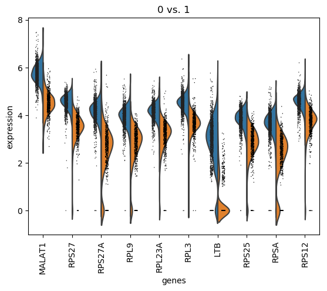
Previous visualizations like the heatmap can also be used to represent the differential expression of the marker genes between both clusters.
In the next steps, we are mostly interested in the marker genes for each cluster individually by comparison one cluster to the rest, instead of a 1-to-1 comparison. So we will use again the AnnData object called 3k PBMC with only HVG, after scaling, PCA, KNN graph, UMAP, clustering, marker genes with Wilcoxon test.
Cell type annotation
Obtaining clusters of cells is quite straightforward. Determining what biological state is represented by each of those clusters is likely the most challenging task in scRNA-Seq data analysis. To do so, we need to bridge the gap between our current dataset and prior biological knowledge.
This biological knowledge is not always available in a consistent and quantitative manner. For example, the concept of “cell type” is not clearly defined. The interpretation of scRNA-seq data is often then quite manual.
Fortunately in the case of our dataset, we can use canonical markers to known cell types:
| Cell type | Marker genes |
|---|---|
| CD4+ T cells | IL7R, CCR7 |
| CD8+ T cells | CD8A |
| CD14+ Monocytes | CD14, LYZ |
| B cells | MS4A1, CD79A |
| Natural killer (NK) cells | GNLY, NKG7, KLRB1 |
| Dendritic Cells | FCER1A, CST3 |
| Megakaryocytes | PPBP |
| FCGR3A+ Monocytes | FCGR3A, MS4A7 |
tip How to find canonical markers?
Canonical markers are usually found in the literature and are also aggregated into dedicated database like the PanglaoDB Franzén et al. 2019
question Questions
Is it possible to match the clusters to cell types using the previous table?
Hint: search for the marker genes in the table in the
Ranked genes with Wilcoxon testdatasetsolution Solution
By searching the marker genes in the the
Ranked genes with Wilcoxon testdataset:
Marker genes Cell type Cluster IL7R CD4+ T cells 0 CCR7 CD4+ T cells 0 CD8A CD8+ T cells 3 CD14 CD14+ Monocytes 1 LYZ CD14+ Monocytes 1 (6) MS4A1 B cells 2 CD79A B cells 2 GNLY Natural killer (NK) cells 5 NKG7 Natural killer (NK) cells 5 (3) KLRB1 Natural killer (NK) cells - FCER1A Dendritic cells 6 CST3 Dendritic cells 6 (4) PPBP Megakaryocytes 7 FCGR3A FCGR3A+ Monocytes 4 (5) We can then aggregate the results by clusters
Cell type Marker genes Cluster CD4+ T cells IL7R, CCR7 0 CD8+ T cells CD8A 3 CD14+ Monocytes CD14, LYZ 1 B cells MS4A1, CD79A 2 Natural killer (NK) cells GNLY, NKG7, KLRB1 5 Dendritic Cells FCER1A, CST3 6 Megakaryocytes PPBP 7 FCGR3A+ Monocytes FCGR3A, MS4A7 4
These canonical marker genes can be easily match the clusters to known cell types:
| Cluster | Cell type |
|---|---|
| 0 | CD4+ T cells |
| 1 | CD14+ Monocytes |
| 2 | B cells |
| 3 | CD8+ T cells |
| 4 | FCGR3A+ Monocytes |
| 5 | Natural killer (NK) cells |
| 6 | Dendritic Cells |
| 7 | Megakaryocytes |
hands_on Hands-on: Add the cell type as cluster names
- Manipulate AnnData tool with the following parameters:
param-file “Annotated data matrix”:
3k PBMC with only HVG, after scaling, PCA, KNN graph, UMAP, clustering, marker genes with Wilcoxon testNote: Take note that this is not the “0 vs 1 Wilcoxon” dataset
“Function to manipulate the object”:
Rename categories of annotation
- “Key for observations or variables annotation”:
louvain- “Comma-separated list of new categories”:
CD4+ T, CD14+, B, CD8+ T, FCGR3A+, NK, Dendritic, MegakaryocytesRename the generated output
3k PBMC with only HVG, after scaling, PCA, KNN graph, UMAP, clustering, marker genes with Wilcoxon test, annotationquestion Questions
How can we check that the cell type has been correctly added?
solution Solution
The cluster information is available in the
obsattribute of the AnnData object. So to check, we should run Inspect AnnData tool with the following parameters:
- param-file “Annotated data matrix”:
3k PBMC with only HVG, after scaling, PCA and KNN graph- “What to inspect?”:
Key-indexed observations annotation (obs)In the last column (called
louvain), we should now have cell type.- Plot with scanpy tool with the following parameters:
- param-file “Annotated data matrix”:
3k PBMC with only HVG, after scaling, PCA, KNN graph, UMAP, clustering, marker genes with Wilcoxon test, annotation- “Method used for plotting”:
Embeddings: Scatter plot in UMAP basis, using 'pl.umap'
- “Keys for annotations of observations/cells or variables/genes”:
louvain- “Use ‘raw’ attribute of input if present”:
Yes- In “Plot attributes”
- “Location of legend”:
on data- “Draw a frame around the scatter plot?”:
No
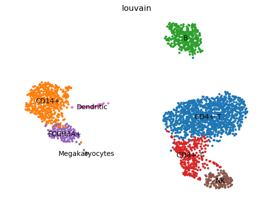
question Questions
How well are the cell types clustered in the neighborhood graph?
solution Solution
T cells (CD4+ and CD8+) are clustered together with NK cells. Monocytes cells (CD14+ and FCGR3A+) are close to each others, with Dendritic and Megakaryocytes. B cells are physically independent.
With the annotated cell types, we can also visualize the expression of their canonical marker genes.
hands_on Hands-on: Plot expression of canonical marker genes for the annotated cell types
- Plot with scanpy tool with the following parameters:
- param-file “Annotated data matrix”:
3k PBMC with only HVG, after scaling, PCA, KNN graph, UMAP, clustering, marker genes with Wilcoxon test, annotation- “Method used for plotting”:
Generic: Makes a dot plot of the expression values, using 'pl.dotplot'
- “Variables to plot (columns of the heatmaps)”:
Subset of variables in 'adata.var_names'
- “List of variables to plot”:
IL7R, CCR7, CD8A, CD14, LYZ, MS4A1, CD79A, GNLY, NKG7, KLRB1, FCER1A, CST3, PPBP, FCGR3A- “The key of the observation grouping to consider”:
louvain- “Number of categories”:
8- “Use ‘raw’ attribute of input if present”:
Yes- “Compute and plot a dendrogram?”:
Yes- In “Group of variables to highlight”
- Click on param-repeat “Group of variables to highlight”
- In “1: Group of variables to highlight”
- “Start”:
0- “End”:
1- “Label”:
CD4+ T- Click on param-repeat “Group of variables to highlight”
- In “2: Group of variables to highlight”
- “Start”:
2- “End”:
2- “Label”:
CD8+- Click on param-repeat “Group of variables to highlight”
- In “3: Group of variables to highlight”
- “Start”:
3- “End”:
4- “Label”:
CD14+- Click on param-repeat “Group of variables to highlight”
- In “4: Group of variables to highlight”
- “Start”:
5- “End”:
6- “Label”:
B- Click on param-repeat “Group of variables to highlight”
- In “5: Group of variables to highlight”
- “Start”:
7- “End”:
9- “Label”:
NK- Click on param-repeat “Group of variables to highlight”
- In “6: Group of variables to highlight”
- “Start”:
10- “End”:
11- “Label”:
Dendritic- Click on param-repeat “Group of variables to highlight”
- In “7: Group of variables to highlight”
- “Start”:
12- “End”:
12- “Label”:
Megakaryocytes- Click on param-repeat “Group of variables to highlight”
- In “8: Group of variables to highlight”
- “Start”:
13- “End”:
13- “Label”:
FCGR3A+
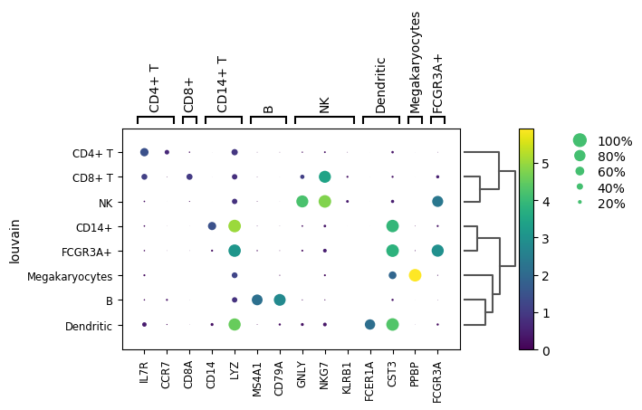
question Questions
- Are the canonical marker genes only expressed in their cell type?
- Are the previous physical cluster (UMAP graph) confirmed?
solution Solution
- Some canonical marker genes like LYZ or CST3 are not only highly expressed in their cell type but also on closely related other cell types.
- As seen on the UMAP graph, T cells (CD4+ and CD8+) are clustered together with NK cells, but NK cells and CD8+ closer to each other. Monocytes cells (CD14+ and FCGR3A+) are close to each others, but B cells are close to Dendritic and then Megakaryocytes despite B cells being physically independent on the neighborhood graph.
Conclusion
In this tutorial, we investigated clustering and annotation of single-cell data from 10x Genomics using Scanpy. This workflow used here was typical for scRNA-seq data analysis:
- Preprocessing with
- Selection and filtration of cells and genes based on quality metrics
- Data normalization and scaling
- Selection of features, i.e. marker genes
- Reduction of the dimensionality via a Principal Component Analysis
- Clustering of the cells by
- Computation of a neighborhood graph
- Clustering of the neighborhood graph into 8 clusters of cells
- Identification of marker genes for the clusters
- Annotation of the clusters with cell types
keypoints Key points
scRNA-seq data analysis is complex and exploratory process, still in development
Different tools and parameters should be tested for each step of the process
Useful literature
Further information, including links to documentation and original publications, regarding the tools, analysis techniques and the interpretation of results described in this tutorial can be found here.
References
- Blondel, V. D., J.-L. Guillaume, R. Lambiotte, and E. Lefebvre, 2008 Fast unfolding of communities in large networks. Journal of statistical mechanics: theory and experiment 2008: P10008. https://iopscience.iop.org/article/10.1088/1742-5468/2008/10/P10008/meta
- Islam, S., A. Zeisel, S. Joost, G. La Manno, P. Zajac et al., 2014 Quantitative single-cell RNA-seq with unique molecular identifiers. Nature methods 11: 163. https://www.nature.com/nmeth/journal/v11/n2/abs/nmeth.2772.html
- Levine, J. H., E. F. Simonds, S. C. Bendall, K. L. Davis, D. A. El-ad et al., 2015 Data-driven phenotypic dissection of AML reveals progenitor-like cells that correlate with prognosis. Cell 162: 184–197. https://www.sciencedirect.com/science/article/pii/S0092867415006376
- Stegle, O., S. A. Teichmann, and J. C. Marioni, 2015 Computational and analytical challenges in single-cell transcriptomics. Nature Reviews Genetics 16: 133–145. https://www.nature.com/articles/nrg3833
- Ilicic, T., J. K. Kim, A. A. Kolodziejczyk, F. O. Bagger, D. J. McCarthy et al., 2016 Classification of low quality cells from single-cell RNA-seq data. Genome biology 17: 29.
- Butler, A., P. Hoffman, P. Smibert, E. Papalexi, and R. Satija, 2018 Integrating single-cell transcriptomic data across different conditions, technologies, and species. Nature biotechnology 36: 411. https://www.nature.com/articles/nbt.4096?draft=journal
- McInnes, L., J. Healy, and J. Melville, 2018 Umap: Uniform manifold approximation and projection for dimension reduction. arXiv preprint arXiv:1802.03426. https://arxiv.org/abs/1802.03426
- Soneson, C., and M. D. Robinson, 2018 Bias, robustness and scalability in single-cell differential expression analysis. Nature methods 15: 255. https://www.nature.com/nmeth/journal/v15/n4/abs/nmeth.4612.html
- Wolf, F. A., P. Angerer, and F. J. Theis, 2018 SCANPY: large-scale single-cell gene expression data analysis. Genome biology 19: 15. https://genomebiology.biomedcentral.com/articles/10.1186/s13059-017-1382-0
- Amezquita, R. A., V. J. Carey, L. N. Carpp, L. Geistlinger, A. T. L. Lun et al., 2019 Orchestrating Single-Cell Analysis with Bioconductor. bioRxiv 590562. https://www.biorxiv.org/content/10.1101/590562v1
- Becht, E., L. McInnes, J. Healy, C.-A. Dutertre, I. W. H. Kwok et al., 2019 Dimensionality reduction for visualizing single-cell data using UMAP. Nature biotechnology 37: 38. https://www.nature.com/articles/nbt.4314
- Franzén, O., L.-M. Gan, and J. L. M. Björkegren, 2019 PanglaoDB: a web server for exploration of mouse and human single-cell RNA sequencing data. Database 2019: https://academic.oup.com/database/article-abstract/doi/10.1093/database/baz046/5427041
- Stuart, T., A. Butler, P. Hoffman, C. Hafemeister, E. Papalexi et al., 2019 Comprehensive Integration of Single-Cell Data. Cell. https://www.sciencedirect.com/science/article/pii/S0092867419305598
- Traag, V. A., L. Waltman, and N. J. van Eck, 2019 From Louvain to Leiden: guaranteeing well-connected communities. Scientific reports 9: https://www.ncbi.nlm.nih.gov/pmc/articles/PMC6435756/
Feedback
Did you use this material as an instructor? Feel free to give us feedback on how it went.

Citing this Tutorial
- Bérénice Batut, Hans-Rudolf Hotz, Mehmet Tekman, 2021 Clustering 3K PBMCs with Scanpy (Galaxy Training Materials). /training-material/topics/transcriptomics/tutorials/scrna-scanpy-pbmc3k/tutorial.html Online; accessed TODAY
- Batut et al., 2018 Community-Driven Data Analysis Training for Biology Cell Systems 10.1016/j.cels.2018.05.012
details BibTeX
@misc{transcriptomics-scrna-scanpy-pbmc3k, author = "Bérénice Batut and Hans-Rudolf Hotz and Mehmet Tekman", title = "Clustering 3K PBMCs with Scanpy (Galaxy Training Materials)", year = "2021", month = "01", day = "06" url = "\url{/training-material/topics/transcriptomics/tutorials/scrna-scanpy-pbmc3k/tutorial.html}", note = "[Online; accessed TODAY]" } @article{Batut_2018, doi = {10.1016/j.cels.2018.05.012}, url = {https://doi.org/10.1016%2Fj.cels.2018.05.012}, year = 2018, month = {jun}, publisher = {Elsevier {BV}}, volume = {6}, number = {6}, pages = {752--758.e1}, author = {B{\'{e}}r{\'{e}}nice Batut and Saskia Hiltemann and Andrea Bagnacani and Dannon Baker and Vivek Bhardwaj and Clemens Blank and Anthony Bretaudeau and Loraine Brillet-Gu{\'{e}}guen and Martin {\v{C}}ech and John Chilton and Dave Clements and Olivia Doppelt-Azeroual and Anika Erxleben and Mallory Ann Freeberg and Simon Gladman and Youri Hoogstrate and Hans-Rudolf Hotz and Torsten Houwaart and Pratik Jagtap and Delphine Larivi{\`{e}}re and Gildas Le Corguill{\'{e}} and Thomas Manke and Fabien Mareuil and Fidel Ram{\'{\i}}rez and Devon Ryan and Florian Christoph Sigloch and Nicola Soranzo and Joachim Wolff and Pavankumar Videm and Markus Wolfien and Aisanjiang Wubuli and Dilmurat Yusuf and James Taylor and Rolf Backofen and Anton Nekrutenko and Björn Grüning}, title = {Community-Driven Data Analysis Training for Biology}, journal = {Cell Systems} }